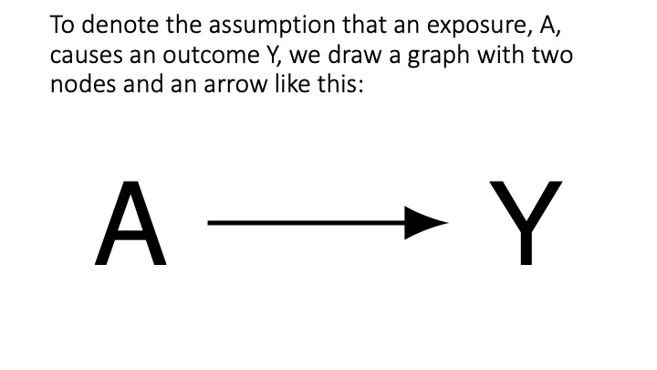
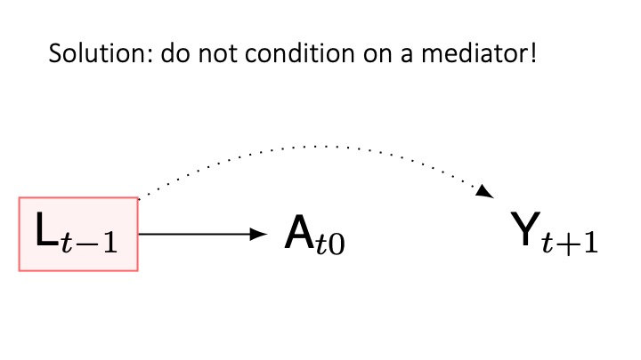
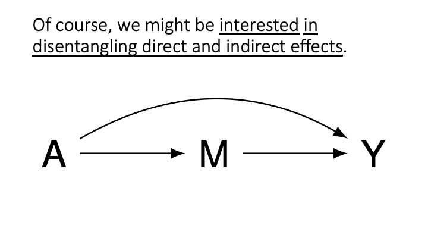
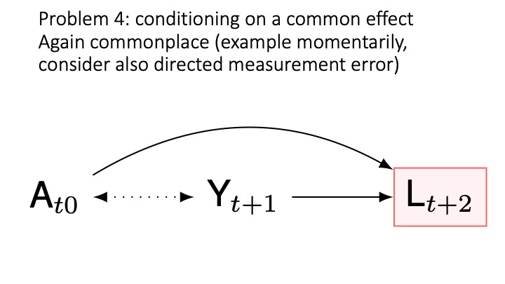
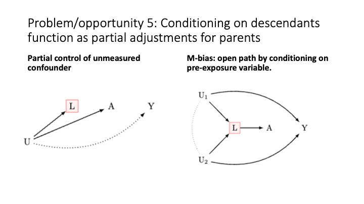

Goals
By the end of this seminaryou will be able to:
- Understand the definition of “causality” as it is used in the human and health sciences.
- Understand the assumptions required for consistently estimating causal effects.
- Understand how to use causal diagrammes to assess these assumptions.
Key Concepts
- Cause/Effect
- Confounder
- Collider
0Where does psychology start?
Psychology starts with a question about how people think or behave.
Group discussion
We know that bilingual children tend to perform better on various cognitive tasks. Why might this be the case?
How can we know whether it is bilingualism that causes better performance on various cognitive tasks?
Hume’s definitions of a causality
“we may define a cause to be an object followed by another, and where all the objects, similar to the first, are followed by objects similar to the second [definition 1]. Or, in other words, where, if the first object had not been, the second never would have existed [definition 2].” - David Hume, Enquiries Concerning Human Understanding, and Concerning the Principles of Morals, Section VII
Individual causal effects
Y_i^{a = 1}: The cognitive ability of child i if they were bilingual. This is the counterfactual outcome when A = 1.
Y_i^{a = 0}: The cognitive ability of child i if they were monolingual. This is the counterfactual outcome when A = 0.
\text{Causal Effect}_i = Y^{a = 1} - Y^{a = 0}
Individual causal quantities
We say there is a causal effect for individual i if:
Y_i^{a=1} - Y_i^{a=0} \neq 0
What is the problem?
- These data required to compute this quantity is generally not available.
Two Roads Diverge in a Yellow Wood
Robert Frost writes,
Two roads diverged in a yellow wood,
And sorry I could not travel both
And be one traveler, long I stood
And looked down one as far as I could
To where it bent in the undergrowth;
Then took the other, as just as fair,
And having perhaps the better claim,
Because it was grassy and wanted wear;
Though as for that the passing there
Had worn them really about the same,
And both that morning equally lay
In leaves no step had trodden black.
Oh, I kept the first for another day!
Yet knowing how way leads on to way,
I doubted if I should ever come back.
I shall be telling this with a sigh
Somewhere ages and ages hence:
Two roads diverged in a wood, and I—
I took the one less traveled by,
And that has made all the difference.
Robert Frost, The Road Not Taken
How can we identify causal effects?
Recall the answers you proposed to bilingual causal question
- e.g. experiment: random assigment to bilingual training.
How does this work?
- Confounders equally distributed
- Count up results
- Take the average of the differences in the two groups.
Average Treatement Effect in a Randomised Experiment
\begin{align} E(\delta) = E(Y^{a=1} - Y^{a=0})\\ ~ = E(Y^{a=1}) - E(Y^{a=0}) \\ ~ = ATE \end{align}
- E(\delta) is the “estimand” or causal quantity of interest (the expected difference between the means of two randomised groups, or equivalentally, the mean of the differences)
Assumptions Required for Estimating Causal Effects From Data
- Causal Consistency: The values of exposure under comparisons correspond to well-defined interventions that, in turn, correspond to the versions of treatment in the data.(see: Chatton, Hernan & Robbins)
- Positivity: The probability of receiving every value of the exposure within all strata of co-variates is greater than zero
- Exchangeablility:The conditional probability of receiving every value of an exposure level, though not decided by the investigators, depends only on the measured covariates (see: Chatton, Hernan & Robbins)
Causal Consistency assumption
The values of exposure under comparisons correspond to well-defined interventions that, in turn, correspond to the versions of treatment in the data.
\begin{equation} Y^{obs} = AY^{a=1} + (1-A)Y^{a=0} \end{equation}
Causal Consistency gets from observations to counterfactuals
For individuals with exposure level A = 1:
\begin{equation} \begin{split} (Y^{obs}|A = 1) &= 1 \times A \times Y^{a=1} + (1-1) \times Y^{a=0}\\ & = 1 \times Y^{a=1} + 0 \times Y^{a=0} \\ & = Y^{a=1} \end{split} \end{equation}
For individuals with exposure level A = 0:
\begin{equation} \begin{split} (Y^{obs}|A = 0) &= 0 \times A \times Y^{a=1} + (1-0) \times Y^{a=0}\\ & = 0 \times Y^{a=1} + 1 \times Y^{a=0} \\ & = Y^{a=0} \end{split} \end{equation}
Which implies:
\begin{equation} \begin{split} Y_i &= Y_i^{a=1}~~~\text{if}~ A_i = 1\\ Y_i &= Y_i^{a=0}~~~ \text{if}~ A_i = 0 \end{split} \end{equation}
Positivity
The probability of receiving every value of the exposure within all strata of co-variates is greater than zero
\begin{equation} 0 < \Pr(A=a|L)<1, ~ \forall a \in A, ~ \forall a \in L \end{equation}
- Two types of positivity violations
- Random non-positivity: the casual effect of aging with observations missing at ages 40-41 (we use parametric models as a work around.)
- Deterministic non-positivity: the causal effect of hysterectomy in biological males (assumption violated).
Conditional Exchangeability
The conditional probability of receiving every value of an exposure level, though not decided by the investigators, depends only on the measured covariates
def: \coprod means “independent of”, a|b translates to “a conditional on b”
\begin{equation} Y^{a=1},Y^{a=0}\coprod A|L \end{equation}
or equivalently
\begin{equation} A \coprod Y^{a=1},Y^{a=0}|L \end{equation}
Where L is the set of co-variates sufficient to ensure the independence of the counterfactual outcomes and the exposure.
Average Treatement Effect in Observational Studies
Where L is observed:
\begin{aligned} ATE = E[Y^{a=1}|L = l] - E[Y^{a=0}|L = l] ~ \text{for any value}~l \end{aligned}
Causal Graphs
Psychology starts with a question. “Does A cause Y?”

Question:

One Problem

Solution: collect time-series data

Why time series data are critical

Another problem: common causes of A an Y (D-separation)

Solution: condition on common causes to ensure d-separation

Another problem: conditioning on a mediator

Conditioning on a mediator is a common problem

Forshadowing: in the weeks ahead we will discuss inferring mediated causal effects
 
Collider bias

Collider bias: solution do not condition on a collider
Conditioning on descendants

Summary

Clear Advice for Drawing Causal Graphs
- Ensure that causes come before effects. Assign time indices to your variables.
- Organize your variables chronologically.
- Simplify your graph by removing unnecessary nodes that don’t impact the assessment of bias between an exposure and an outcome.
- Keep in mind that Directed Acyclic Graphs (DAGs) are qualitative tools. They don’t represent non-linear associations or interactions.
- Avoid depicting interactions by crossing arrows.
- Remember that DAGs are distinct from graphs used in Structural Equation Modeling (SEM). Be cautious of SEM literature, as it often overlooks the assumptions needed for causal inference.
Summary: Drawing Causal Graphs (DAGs)
Directed Acyclic Graphs (DAGs) help visualize sources of bias.
There are five main sources of bias:
- Temporal order ambiguity: Uncertainty about whether causes precede effects. Solution: Collect time series data or clarify assumptions when unavailable.
- Common causes of exposure and outcome: Address this by including common causes in your statistical model (e.g., using regression).
- Conditioning on a mediator: Avoid this unless mediation is of interest.
- Conditioning on a collider: Refrain from doing this.
- Bias induced by conditioning on a confounder’s descendant: Draw your DAG and follow guidelines for points 1-4.
Important Note 1: In observational studies, it’s impossible to guarantee complete control for confounding. Always conduct sensitivity analyses. Techniques for sensitivity analyses will be discussed next week.
Important Note 2: Methods for computing causal effects for group comparisons will be covered in the following week’s lecture.
What have we learned?
- Cause/Effect: a contrast between the world under different interventions, at most one of which is realised.
- Confounding: failure to condition on a common cause.
- Collider bias: conditioning on a common effect
Metric equivalence: Factor loadings are similar across groups. Configural equivalence: The factor structure is the same across groups in a multi-group confirmatory factor analysis. Scalar equivalence: Values/Means are also equivalent across groups.